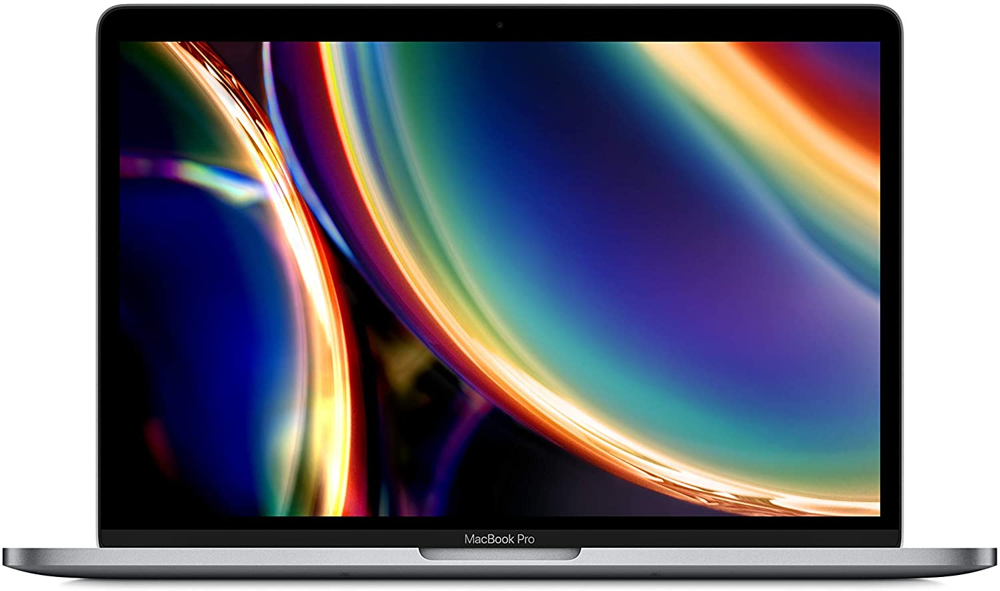
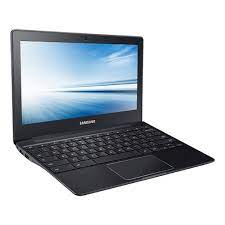
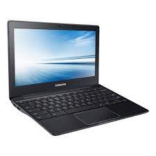

Ordenadores portátiles o laptops
Un ordenador portátil es el modelo de computador más extendido actualmente, llamado también laptop. ¿Crees que sabes al 100% para qué sirve? ¿No preferirías informarte más sobre los tipos de portátiles antes de comprar uno? Obtén toda la info necesaria aquí.

Tipos de portátiles o laptops
Cabe decir que en esta lista no se han introducido los portátiles de gaming ya que estos han sido tratados en otra entrada con mayor detalle.
Ultrabooks (1000-3000€): Son equipos de mayor autonomía que los portátiles, menor capacidad de almacenamiento y buena potencia. Son extremadamente finos, como máximo de 0,8 pulgadas de grosor. Comúnmente, se asocia su aspecto a ordenadores "elegantes" y caros.
Portátiles Medianos o Notebooks (500-2000€): Son los computadores portátiles de siempre. Sirven para hacer un poco de todo (navegar por internet, usar la mayoría de programas, jugar juegos no muy exigentes, editar fotos y videos...). Procesador i3/i5 normalmente y de unos 256 a 512 GB de disco.
Chromebooks (200-500€): portátiles pequeños que sólo trabajan en la nube. De este modo, estos equipos incluyen casi únicamente el navegador web. Toda la información en ellos guardada (TODA) se aloja en servidores de Google. Todo lo anterior minimiza el precio. Suelen ser equipos rápidos, ligeros y con gran autonomía (6-10h).
Netbooks (150-400€): Son portátiles pequeños y baratos. Tienen menos potencia, aunque la suficiente como para lidiar con los programas habituales. Suelen usar memorias flash en lugar de discos duros por lo que su capacidad de almacenamiento (16-64GB) es menor que en los portátiles.
 

¿Como saber si una computadora portátil es para ti?
Hoy en día, 2022, un portátil es esencial para cualquier persona, pero no siempre hace falta la misma potencia o los mismos requerimientos. Esta es una decisión muy importante en la vida profesional del usuario, por lo que es necesario para él conocer estos puntos en los que fijarse antes de decidirse por un modelo:
CPU: La CPU es, de forma rápida, el cerebro del ordenador, y por eso sería necesario tener uno bueno. Para poner datos a esto, para el usuraio medio, consideramos que debería contar como mínimo con un intel i3 (o con su equivalente AMD Ryzen 3) para poseer una potencia satisfactoria.
GPU: La GPU es el cerebro gráfico, es decir, el encargado de los calculos de gráficos para aligerar en la CPU. No todos los usuarios necesitan un gran procesamiento en este campo. Si te dedicas a trabajar en campos gráficos, como la edición de vídeos o muy pesados como la inteligencia artificial, recomendamos una gráfica dedicada. Nuestra recomendación personal, GeForce RTX 1080 o superiores. Si esto que hemos descrito no es tu caso, con una GPU integrada será suficiente, y te ahorrarás una buena cantidad de dinero.
RAM: La RAM es una memoria de acceso rápido que posee el ordenador y que se borra cada vez que se reinicia el mismo. En ella se guardan los datos momentáneos que el programa guarda, como por ejemplo los puntos de un juego. Si el usuario trabaja con programas muy pesados, son extremadamente necesarios como mínimo 12GB, pero 16GB sería mejor. Si se trabaja con programas ligeros, 8GB podrían ser suficientes, pero al no ser un componente muy caro, 12GB sería idóneo.
Disco: Es el espacio del que dispone el ordenador para guardar archivos. Otra vez, si tu trabajo genera muchos archivos que necesitas guardar, 512GB, o 256GB si me aprietas serán suficientes. De lo contrario, 128GB podrían ser aceptables, aunque se recomiendan los 256GB. Es de suma importancia que el disco sea SSD para asegurar una buena velocidad de trabajo.
Precio: Creo que este punto está más que claro... Cuanto mejor para nuestro bolsillo, mejor para nosotros. Debes fijarte en la sección aterior "tipos de láptops" en cuanto cuesta de media un ordenador de ese tipo y fijar objetivos dentro de ese rango.
El método que les propondremos para seleccionar un ordenador es el siguiente: Obtendremos una puntuación para la láptop y la que mejor puntuación tenga será el mejor. Se obtendrá así:
Si cumple con lo especificado para la CPU: +10
Si cumple con lo especificado para la RAM: +6
Si cumple con lo especificado para el Disco: +5
Si cumple con lo especificado para la GPU: +3
Buscar dentro de los que tengan un precio asequible para usted, y dentro de los igualmente puntuados, elegir el más barato.